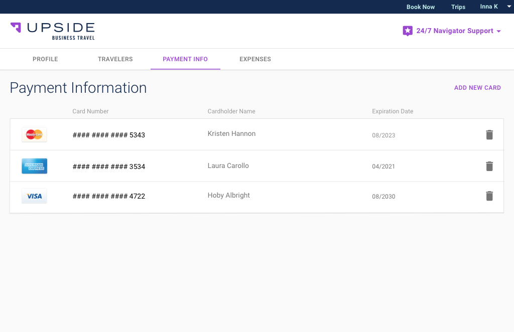

Overview
I wanted to design a feature that would allow users to seamlessly view, add, and delete payment options under their profile while also being able to select between using an existing payment option or adding a new one at checkout. In the current system, users can only add payment options during the checkout process.
In order to delete a payment option, users have to contact an Upside Navigator (Upside’s personal customer service team) who then create an internal ticket for the data team to approve. The goal of this feature was to reduce the time from 24 hours to 24 seconds, therefore reducing frustrations and improving the overall booking experience for the user.
Challenge
The challenge of this feature was working within the technical constraints of the project. Upside operates on the agile software development approach, therefore the scope of the project would be limited to one sprint. Because of this, it was important to understand the user needs to make sure the main pain points were addressed through the feature. Additionally, I had to work within the existing design guidelines.
The Market
I did competitive research to establish the baseline features ecommerce shops and travel sites used to help users view and manage their payment options.
After exploring multiple online vendors, I established that across all platforms users were able to
- view existing payment options under profile ‘Payment Information’
- delete, add and edit payment options under a ‘Payment Information’ tab in their profile
- add new payment option or use existing payment methods at checkout
- set a default payment option
The features that were common but were not consistently used
- ability to add a payment nickname
- edit payment options at checkout
- delete payment options at checkout
- see expired payment options at checkout
Stakeholder Interviews
Multiple rounds of stakeholder interviews were conducted throughout the design process to understand customer needs as well as engineering and security constraints associated with the project.
Quality and Training Team
This feature suggestion originated from the quality and training team, who work with the 24/7 customer service team, the navigators. The quality and training team was able to provide insight on the current system of managing payment options as well as insights on customer pain points. In the current system, Upside customers would have to contact a navigator to delete a card off their profile. The navigators would create a ticket for customer service who would then notify the data team. Speaking with the quality and training team the main pain point customers were experiencing was the inability to view all their payment options and the ability to delete payment options.
Engineering
Working within the agile development approach, meeting with the engineering team early was critical in ensuring that the designs I had produced would get built. After the meeting, features that were initially considered baseline became out of scope because of technical constraints. The technical constraints were tied to Upside’s payment data storage provider, BrainTree, and the constraints that exist within it.
Design
Being an intern it’s important to consult with other designers to ensure that my designs followed the brand guidelines. Throughout the design process I met with multiple senior designers and participated in design critiques to ensure that my designs were consistent with the product.
Digital Prototypes
User Testing
The feature was tested on ten Upside travelers recruited through a Qualaroo survey provided at checkout. Users were able to seamlessly find the ‘Payment Info’ tab and add and delete payment options under their account features. Users also seamlessly navigated between adding new payment options and using existing payment options at checkout.
Multiple users vocalized feature changes that were considered in the original designs but had to be removed due to technical constraints. These include being able to edit at checkout and adding a card nickname to be better able to distinguish between credit cards on file. These suggestions were noted will be incorporated into future designs.